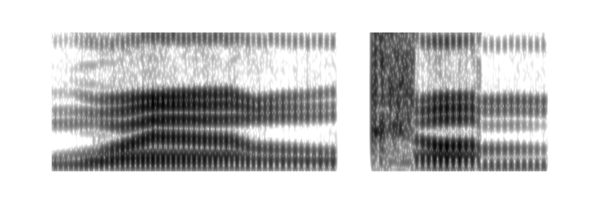
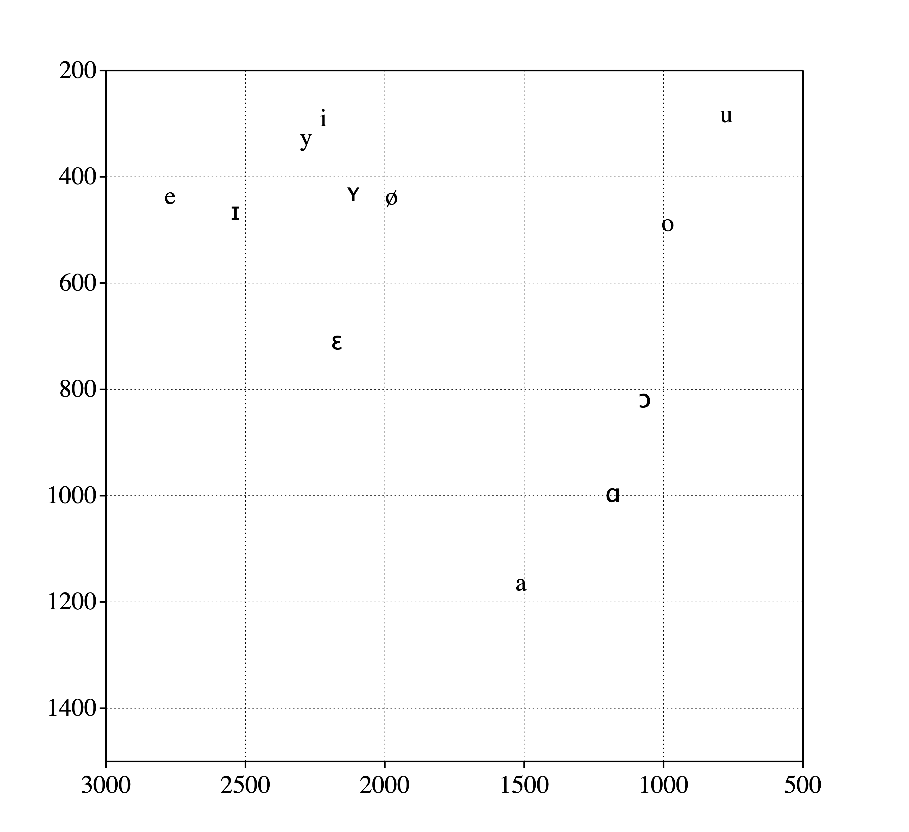

Bio
Xinyu Zhang ([ɕin˥˥ɥy˨˩˦ ʈ͡ʂɑŋ˥˥]) is a linguist in training. She currently studies at ACLC of University of Amsterdam, under the supervision of Dr. Rob van Son and Dr. Paul Boersma. Her main areas of interest are phonetics and phonology, acoustic and articulatory phonetics, and production-perception interaction.
Her most recent research projects include a study on the cross-generation auditory dispersion of the Dutch sibilants /s/ and /ɕ/, and a study of the psychoacoustics of perceived voice qualities after the treatment of laryngeal carcinoma.
Please like and subscribe :)
Education
University of Amsterdam - ACLC | Amsterdam, The Netherlands
M.Phil in Linguistics | September 2019 - Now
University of Amsterdam | Amsterdam, The Netherlands
MA in General Linguisitics | September 2018 - August 2020
Party Tricks
Praat sings Happy Birthday | Praat Script | © Xinyu Zhang, 2019
Let R automate participant notification email for ya | R script + Rmd|© Mine Çetinkaya-Rundel, 2015; modified by Xinyu Zhang, 2021
Results from the voice quality study:
Progress as of March 3, 2021
View slides
Some highlights:
Roughness as predicted by acoustic measurements
De-correlated breathiness as predicted by acoustic measurements
Results from the sibilant study
(All participants who indicated interest in the findings on the consent form have been emailed the full results. Thank you all for donating your voices <3)
If you want to read the whole paper: PDF.
Otherwise, some TL;DR:
Acoustic distance between [ɕ] and [s] in each participant, separated by age group:
Speakers aged between 18-30, Center of Gravity on X-axis, standard deviation of the peak on Y-axis
Speakers aged above 60, Center of Gravity on X-axis, standard deviation of the peak on Y-axis
The red and blue circles in the above plot for older speakers have more overlap than in the first plot for young speakers.
Alternatively, if we run a PCA on energies by frequency bins:
“Elements” in the following plots refer to frequency bins in the long-term-average-spectra (bin width = 250 Hz, LTAS range = 550 - 10000 Hz).Eigenvector 1 looks like it’s just amplitude difference
age > 60
18< age < 30
ranking of bins in the younger speakers
ranking of bins in the older speakers
Things you didn’t need to know:
If you want to get to know me a tiny bit better, here are my cardinal vowels plotted.
(I mean, what better way to get to know someone, right?)

Also, I play the sacriligious otamatone